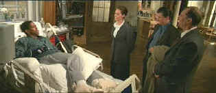

|
Bone
Collector, The(SE)/B,B+ |
|
Universal/1999/118m/ANA
2.35 |
|
Denzel Washington is a very special movie star. He
commands the screen in every film he makes and in The
Bone Collector, he's so dynamic, that even playing a quadriplegic
crime scene specialist, Denzel infuses the role with
energy, and his typical core of intelligence.
 |
| Rhyme
has his reasons. ©Universal |
|
|

 Why
do Al Pacino, Gene Hackman, Pat O'Brien and Goldie
Hawn fall into a select group of actors? Find out
more by clicking the Hollywood
on the Sidelines symbol. Why
do Al Pacino, Gene Hackman, Pat O'Brien and Goldie
Hawn fall into a select group of actors? Find out
more by clicking the Hollywood
on the Sidelines symbol.
  Direct
from the corridors of the Home
Theater Forum, Home Theater Talk is
the newest place on the Net to
discuss everything home theater.
Friendly atmosphere and
knowledgeable folks are the secret
ingredients. Direct
from the corridors of the Home
Theater Forum, Home Theater Talk is
the newest place on the Net to
discuss everything home theater.
Friendly atmosphere and
knowledgeable folks are the secret
ingredients.
They may
be judgmental, but that's the point, isn't it. Lots of DVD reviews
plus news and more.
Click on the link to visit the judge's chambers.
 A
love of movies drives this small DVD production company, Synapse
Films. Currently specializing in horror and cult films.
Watch for new DVD releases of film festival independents as Synapse
branches out. A
love of movies drives this small DVD production company, Synapse
Films. Currently specializing in horror and cult films.
Watch for new DVD releases of film festival independents as Synapse
branches out.

Edward
G. Robinson
|